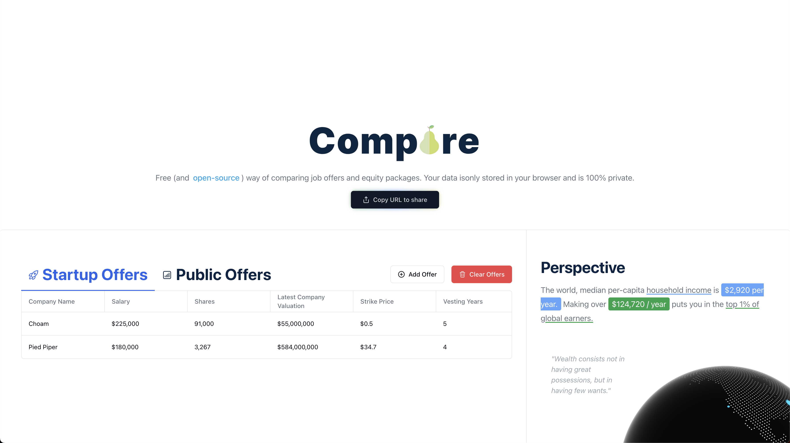
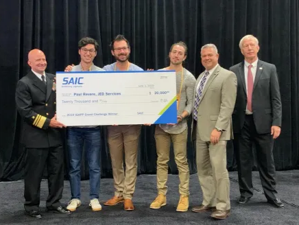

Devon Peroutky
10 years of experience building ML and distributed systems at world class startups.
Most recently I designed the full post-training pipeline and infrastructure behind DeepHat V1, an open-source 7B cybersecurity LLM that is the smallest model ever to score 5% on Cybench, and beat GPT-4o-mini on code editing tasks despite being significantly smaller.
Along time ago, I founded Landria, an A.I. search and collaboration tool for corporate knowledge bases acquired by Brex in 2020. At Brex, I ran strategy and roadmaps across 5 developer platform teams.
I led an engineering team at Valon where we turned a manual mortgage onboarding process into automated DAG pipelines that scaled throughput 20x and cut errors by >90%.
On the side, I built Happy Accidents, a generative AI image app that hit 150k+ users purely through word of mouth, and earlier in my career I built Twilio's core transaction streaming pipeline powering their billing and compliance systems.
Some stuff I've built
Happy Accidents
Open-source generative AI image creation and editing app. Built a distributed GPU cluster for inference and training. 150K+ users from word-of-mouth alone.
Landria (Acquired by Brex)
AI-powered chatbot and RAG tool for corporate knowledge bases.

Compare
Free, open-source, fully private in-browser web application for people to evaluate, compare, and share job offers.

Paul Revere
Award-winning Military Recall App chosen by SAIC for the Department of Defense, providing commanders with advanced GPS tracking and alert capabilities for squad management.
Work history
Redux Payments — ML Architect
2025 – Present
Designed and built an ML payment retry optimization system using XGBoost, increasing failed payment recovery by 18%. Built the end-to-end ML pipeline and a novel counterfactual evaluation framework.
Kindo — Staff ML Engineer
2024 – Present
Created DeepHat V1, a SOTA 7B cybersecurity LLM — the smallest model to score 5% on Cybench, outperforming GPT-4o-mini on code editing tasks. Architected the full post-training pipeline including data mix, evaluation, and distributed training infrastructure.
Valon — Tech Lead
2021 – 2023
Led engineering team building the Mortgage Onboarding Platform. Scaled transfer throughput 20x with >90% error reduction via automated DAG pipelines processing 40K+ monthly mortgages.
Brex — Technical Manager
2020 – 2021
Managed the internal Developer Platform. Set OKRs, metrics, and roadmaps for 5 platform teams.
Landria — Founder
2018 – 2020
Designed and built an A.I. search and collaboration tool for corporate knowledge bases. Acquired by Brex.
Twilio — Senior Engineer
2015 – 2018
Built the core streaming pipeline for processing transactions via S3, Kafka, MySQL, and Spark. Powered usage-based billing, SOX compliance, and the pricing engine.
Get in touch
Want to talk software, AI, or about life? devonperoutky@gmail.com
I'm building silly robotics/AI/3D fabrication stuff for YouTube. If you're interested in collaborating, hit me up.